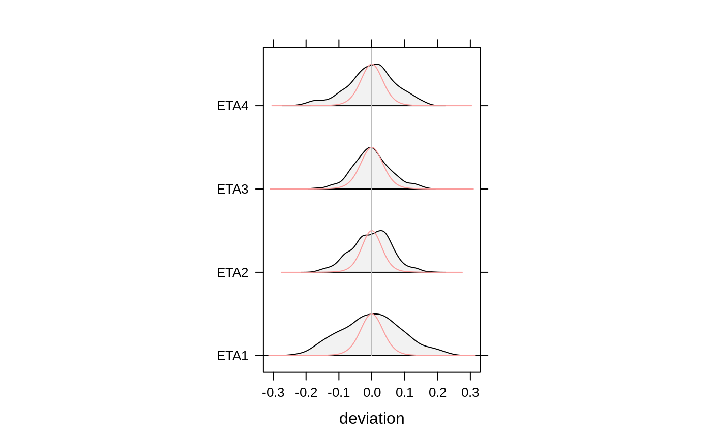
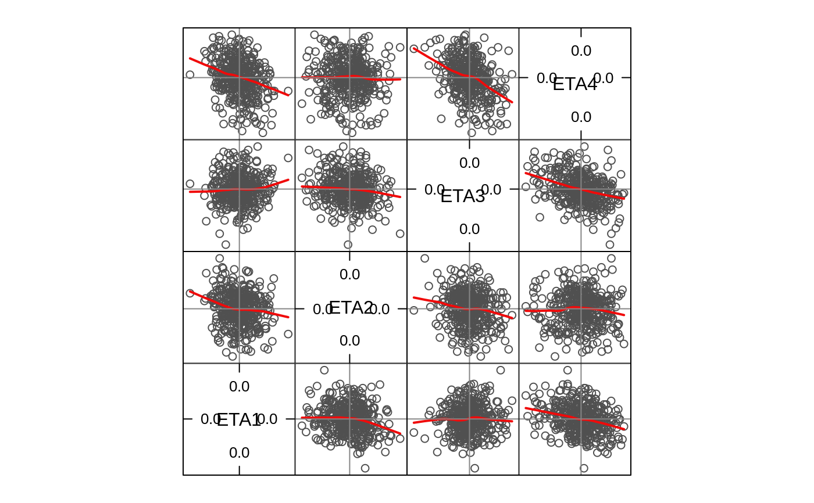
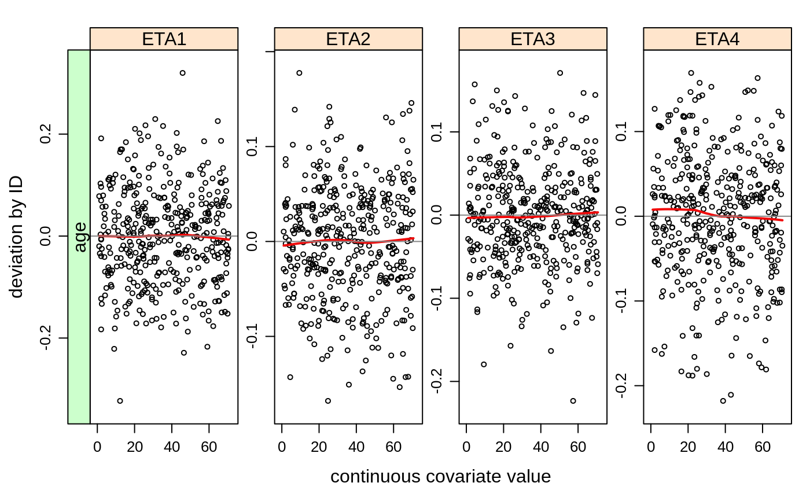
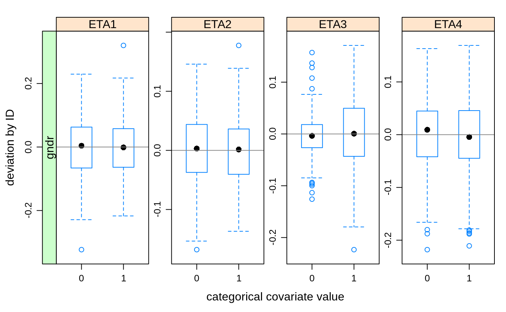
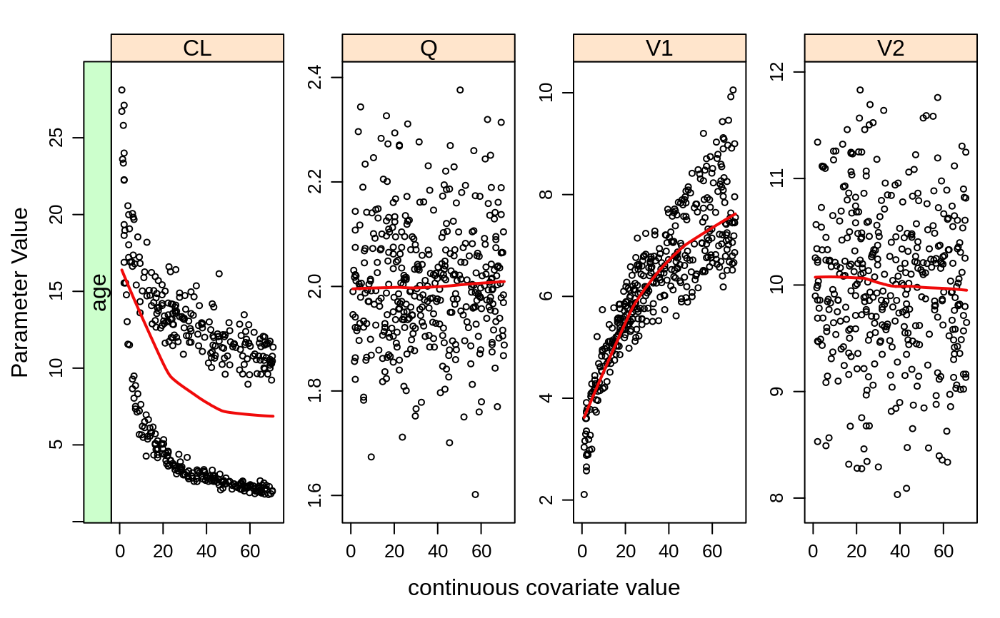
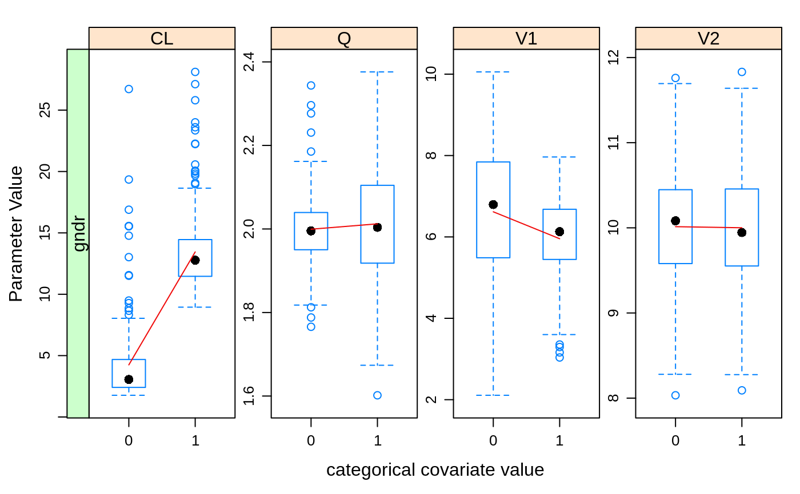

nm.covplot.RdCreate ETA vs covariates and parameter estimates vs covariates. Programmed with the intention to get between 95-100% of report Appendices ready plots. If not, the data.frames on basis of which they were created are available as well to enable creating the desired graphs very easily.
nm.covplot( run = "run1", path = getOption("nmDir"), id.var = "ID", iov = FALSE, eta.densities = TRUE, eta.skip = NULL, shrinkage = FALSE, covlist = list(cat = c(NULL), con = c(NULL)), catcov.sep = 5, parameters = NULL, aspect = "fill", pcx = 0.5, uniques = FALSE, which.list = 1 )
| run | run rootname (e.g. |
|---|---|
| path | directory where |
| id.var | character string denoting grouping variable ("ID") |
| iov | inter-occasion variability flag (this argument is ignored currently) |
| eta.densities | logical to determine of ETA density plots have to be generated |
| eta.skip | character vector of ETAs that will be skipped |
| shrinkage | providing shrinkage values. This is currently ignored |
| covlist | a list with elements |
| catcov.sep | max number of unique values for a covariate to be assigned 'categorical' |
| parameters | a character vector with parameter names to plot |
| aspect | lattice banking aspect for rectangular or square plots. Defaults to 'fill' |
| pcx | dot size |
| uniques | set to TRUE to look at one value per ID only. defaults to F |
| which.list | which element of the list in case multiple regression methods were used. Defaults to 1. |
A list with plots and properly sorted / molten data.frames for customized plots
args(nm.covplot)#> function (run = "run1", path = getOption("nmDir"), id.var = "ID", #> iov = FALSE, eta.densities = TRUE, eta.skip = NULL, shrinkage = FALSE, #> covlist = list(cat = c(NULL), con = c(NULL)), catcov.sep = 5, #> parameters = NULL, aspect = "fill", pcx = 0.5, uniques = FALSE, #> which.list = 1) #> NULLnmcov = nm.covplot(path = getOption("qpExampleDir") , run = "example2", parameters = c("CL","V1","Q","V2") , covlist = list(con = "AGE", cat = "GNDR"))#>#> processed NONMEM output and covariate data and created covariate plots of 400 subjects#> [1] "covdata" "eta.splom" "eta.dens" "conData.eta" "catData.eta" "conData.par" "catData.par" "etaContVarPlot" #> [9] "etaCatVarPlot" "parContVarPlot" "parCatVarPlot" "etas"#[1] "covdata" "eta.splom" "eta.dens" # "conData.eta" "catData.eta" "conData.par" "catData.par" #[8] "etaContVarPlot" "etaCatVarPlot" "parContVarPlot" "parCatVarPlot" # let's look at the plots nmcov$eta.dens()# red line is the distribution predicted obo OMEGA estimate # the grey polygon is the actual ETA distribution ## elegant pairs plot nmcov$eta.splom()## ETAs vs. Continuous Covariates nmcov$etaContVarPlot()## ETAs vs. Categorical Covariates nmcov$etaCatVarPlot()nmcov$etaCatVarPlot(F)## parameters vs. Continuous Covariates nmcov$parContVarPlot()## parameters vs. Categorical Covariates nmcov$parCatVarPlot()## data frames required to replot the above are right there for convenience head(nmcov$covdata) ## merged get.xpose.table and nm.params.table output!#> id age gndr cl v1 q v2 eta1 eta2 eta3 eta4 time conc ipred pred res wres cpred cwres epred eres #> 1 1 65.05 0 2.0909 8.0889 1.8929 9.415 -0.0131590 -0.048924 -0.056447 -0.059266 0 0 5.0655e-01 11.772 0 0 11.758 0 11.815 0 #> 7 2 10.10 0 5.6548 4.6290 2.0726 10.213 -0.1578500 0.019324 0.034236 0.022142 0 0 1.5368e-03 22.024 0 0 22.020 0 21.862 0 #> 13 3 70.30 0 1.9671 8.9991 1.9691 10.816 -0.0266900 0.031615 -0.016993 0.079460 0 0 1.0328e-02 11.469 0 0 11.463 0 11.634 0 #> 19 4 20.95 1 11.6290 5.7655 2.0470 11.250 -0.1710400 0.028489 0.021841 0.118800 0 0 5.6348e-03 17.846 0 0 17.839 0 17.845 0 #> 25 5 23.40 0 3.9793 6.2047 2.1043 10.861 0.0048153 0.029735 0.049429 0.083580 0 0 9.6692e-03 16.603 0 0 16.596 0 16.748 0 #> 31 6 66.45 1 10.0150 7.2091 1.8437 10.608 -0.0800790 0.030547 -0.082771 0.060078 0 0 2.5613e-06 14.302 0 0 14.295 0 14.328 0 #> ewres evid THETA1 THETA2 THETA3 THETA4 THETA5 THETA6 THETA7 THETA8 THETA9 THETA10 THETA11 OMEGA1.1 OMEGA2.1 OMEGA2.2 #> 1 0 1 3.30522 3.25797 -0.611824 -0.208226 0.735323 1.13992 0.336296 0.191801 0.694545 2.30157 0.10003 0.0102821 0.000191938 0.00794823 #> 7 0 1 3.30522 3.25797 -0.611824 -0.208226 0.735323 1.13992 0.336296 0.191801 0.694545 2.30157 0.10003 0.0102821 0.000191938 0.00794823 #> 13 0 1 3.30522 3.25797 -0.611824 -0.208226 0.735323 1.13992 0.336296 0.191801 0.694545 2.30157 0.10003 0.0102821 0.000191938 0.00794823 #> 19 0 1 3.30522 3.25797 -0.611824 -0.208226 0.735323 1.13992 0.336296 0.191801 0.694545 2.30157 0.10003 0.0102821 0.000191938 0.00794823 #> 25 0 1 3.30522 3.25797 -0.611824 -0.208226 0.735323 1.13992 0.336296 0.191801 0.694545 2.30157 0.10003 0.0102821 0.000191938 0.00794823 #> 31 0 1 3.30522 3.25797 -0.611824 -0.208226 0.735323 1.13992 0.336296 0.191801 0.694545 2.30157 0.10003 0.0102821 0.000191938 0.00794823 #> OMEGA3.1 OMEGA3.2 OMEGA3.3 OMEGA4.1 OMEGA4.2 OMEGA4.3 OMEGA4.4 #> 1 0.00128179 -0.000170245 0.0100068 -0.000595539 0.000542183 0.00200055 0.00967012 #> 7 0.00128179 -0.000170245 0.0100068 -0.000595539 0.000542183 0.00200055 0.00967012 #> 13 0.00128179 -0.000170245 0.0100068 -0.000595539 0.000542183 0.00200055 0.00967012 #> 19 0.00128179 -0.000170245 0.0100068 -0.000595539 0.000542183 0.00200055 0.00967012 #> 25 0.00128179 -0.000170245 0.0100068 -0.000595539 0.000542183 0.00200055 0.00967012 #> 31 0.00128179 -0.000170245 0.0100068 -0.000595539 0.000542183 0.00200055 0.00967012#> id gndr cl v1 q v2 time conc ipred pred res wres cpred cwres epred eres ewres evid THETA1 THETA2 THETA3 THETA4 #> 1 1 0 2.0909 8.0889 1.8929 9.415 0 0 5.0655e-01 11.772 0 0 11.758 0 11.815 0 0 1 3.30522 3.25797 -0.611824 -0.208226 #> 2 2 0 5.6548 4.6290 2.0726 10.213 0 0 1.5368e-03 22.024 0 0 22.020 0 21.862 0 0 1 3.30522 3.25797 -0.611824 -0.208226 #> 3 3 0 1.9671 8.9991 1.9691 10.816 0 0 1.0328e-02 11.469 0 0 11.463 0 11.634 0 0 1 3.30522 3.25797 -0.611824 -0.208226 #> 4 4 1 11.6290 5.7655 2.0470 11.250 0 0 5.6348e-03 17.846 0 0 17.839 0 17.845 0 0 1 3.30522 3.25797 -0.611824 -0.208226 #> 5 5 0 3.9793 6.2047 2.1043 10.861 0 0 9.6692e-03 16.603 0 0 16.596 0 16.748 0 0 1 3.30522 3.25797 -0.611824 -0.208226 #> 6 6 1 10.0150 7.2091 1.8437 10.608 0 0 2.5613e-06 14.302 0 0 14.295 0 14.328 0 0 1 3.30522 3.25797 -0.611824 -0.208226 #> THETA5 THETA6 THETA7 THETA8 THETA9 THETA10 THETA11 OMEGA1.1 OMEGA2.1 OMEGA2.2 OMEGA3.1 OMEGA3.2 OMEGA3.3 OMEGA4.1 #> 1 0.735323 1.13992 0.336296 0.191801 0.694545 2.30157 0.10003 0.0102821 0.000191938 0.00794823 0.00128179 -0.000170245 0.0100068 -0.000595539 #> 2 0.735323 1.13992 0.336296 0.191801 0.694545 2.30157 0.10003 0.0102821 0.000191938 0.00794823 0.00128179 -0.000170245 0.0100068 -0.000595539 #> 3 0.735323 1.13992 0.336296 0.191801 0.694545 2.30157 0.10003 0.0102821 0.000191938 0.00794823 0.00128179 -0.000170245 0.0100068 -0.000595539 #> 4 0.735323 1.13992 0.336296 0.191801 0.694545 2.30157 0.10003 0.0102821 0.000191938 0.00794823 0.00128179 -0.000170245 0.0100068 -0.000595539 #> 5 0.735323 1.13992 0.336296 0.191801 0.694545 2.30157 0.10003 0.0102821 0.000191938 0.00794823 0.00128179 -0.000170245 0.0100068 -0.000595539 #> 6 0.735323 1.13992 0.336296 0.191801 0.694545 2.30157 0.10003 0.0102821 0.000191938 0.00794823 0.00128179 -0.000170245 0.0100068 -0.000595539 #> OMEGA4.2 OMEGA4.3 OMEGA4.4 conVariable conValue variable value #> 1 0.000542183 0.00200055 0.00967012 age 65.05 eta1 -0.0131590 #> 2 0.000542183 0.00200055 0.00967012 age 10.10 eta1 -0.1578500 #> 3 0.000542183 0.00200055 0.00967012 age 70.30 eta1 -0.0266900 #> 4 0.000542183 0.00200055 0.00967012 age 20.95 eta1 -0.1710400 #> 5 0.000542183 0.00200055 0.00967012 age 23.40 eta1 0.0048153 #> 6 0.000542183 0.00200055 0.00967012 age 66.45 eta1 -0.0800790#> id age cl v1 q v2 time conc ipred pred res wres cpred cwres epred eres ewres evid THETA1 THETA2 THETA3 THETA4 #> 1 1 65.05 2.0909 8.0889 1.8929 9.415 0 0 5.0655e-01 11.772 0 0 11.758 0 11.815 0 0 1 3.30522 3.25797 -0.611824 -0.208226 #> 2 2 10.10 5.6548 4.6290 2.0726 10.213 0 0 1.5368e-03 22.024 0 0 22.020 0 21.862 0 0 1 3.30522 3.25797 -0.611824 -0.208226 #> 3 3 70.30 1.9671 8.9991 1.9691 10.816 0 0 1.0328e-02 11.469 0 0 11.463 0 11.634 0 0 1 3.30522 3.25797 -0.611824 -0.208226 #> 4 4 20.95 11.6290 5.7655 2.0470 11.250 0 0 5.6348e-03 17.846 0 0 17.839 0 17.845 0 0 1 3.30522 3.25797 -0.611824 -0.208226 #> 5 5 23.40 3.9793 6.2047 2.1043 10.861 0 0 9.6692e-03 16.603 0 0 16.596 0 16.748 0 0 1 3.30522 3.25797 -0.611824 -0.208226 #> 6 6 66.45 10.0150 7.2091 1.8437 10.608 0 0 2.5613e-06 14.302 0 0 14.295 0 14.328 0 0 1 3.30522 3.25797 -0.611824 -0.208226 #> THETA5 THETA6 THETA7 THETA8 THETA9 THETA10 THETA11 OMEGA1.1 OMEGA2.1 OMEGA2.2 OMEGA3.1 OMEGA3.2 OMEGA3.3 OMEGA4.1 #> 1 0.735323 1.13992 0.336296 0.191801 0.694545 2.30157 0.10003 0.0102821 0.000191938 0.00794823 0.00128179 -0.000170245 0.0100068 -0.000595539 #> 2 0.735323 1.13992 0.336296 0.191801 0.694545 2.30157 0.10003 0.0102821 0.000191938 0.00794823 0.00128179 -0.000170245 0.0100068 -0.000595539 #> 3 0.735323 1.13992 0.336296 0.191801 0.694545 2.30157 0.10003 0.0102821 0.000191938 0.00794823 0.00128179 -0.000170245 0.0100068 -0.000595539 #> 4 0.735323 1.13992 0.336296 0.191801 0.694545 2.30157 0.10003 0.0102821 0.000191938 0.00794823 0.00128179 -0.000170245 0.0100068 -0.000595539 #> 5 0.735323 1.13992 0.336296 0.191801 0.694545 2.30157 0.10003 0.0102821 0.000191938 0.00794823 0.00128179 -0.000170245 0.0100068 -0.000595539 #> 6 0.735323 1.13992 0.336296 0.191801 0.694545 2.30157 0.10003 0.0102821 0.000191938 0.00794823 0.00128179 -0.000170245 0.0100068 -0.000595539 #> OMEGA4.2 OMEGA4.3 OMEGA4.4 catVariable catValue variable value #> 1 0.000542183 0.00200055 0.00967012 gndr 0 eta1 -0.0131590 #> 2 0.000542183 0.00200055 0.00967012 gndr 0 eta1 -0.1578500 #> 3 0.000542183 0.00200055 0.00967012 gndr 0 eta1 -0.0266900 #> 4 0.000542183 0.00200055 0.00967012 gndr 1 eta1 -0.1710400 #> 5 0.000542183 0.00200055 0.00967012 gndr 0 eta1 0.0048153 #> 6 0.000542183 0.00200055 0.00967012 gndr 1 eta1 -0.0800790#> id gndr eta1 eta2 eta3 eta4 time conc ipred pred res wres cpred cwres epred eres ewres evid THETA1 THETA2 THETA3 #> 1 1 0 -0.0131590 -0.048924 -0.056447 -0.059266 0 0 5.0655e-01 11.772 0 0 11.758 0 11.815 0 0 1 3.30522 3.25797 -0.611824 #> 2 2 0 -0.1578500 0.019324 0.034236 0.022142 0 0 1.5368e-03 22.024 0 0 22.020 0 21.862 0 0 1 3.30522 3.25797 -0.611824 #> 3 3 0 -0.0266900 0.031615 -0.016993 0.079460 0 0 1.0328e-02 11.469 0 0 11.463 0 11.634 0 0 1 3.30522 3.25797 -0.611824 #> 4 4 1 -0.1710400 0.028489 0.021841 0.118800 0 0 5.6348e-03 17.846 0 0 17.839 0 17.845 0 0 1 3.30522 3.25797 -0.611824 #> 5 5 0 0.0048153 0.029735 0.049429 0.083580 0 0 9.6692e-03 16.603 0 0 16.596 0 16.748 0 0 1 3.30522 3.25797 -0.611824 #> 6 6 1 -0.0800790 0.030547 -0.082771 0.060078 0 0 2.5613e-06 14.302 0 0 14.295 0 14.328 0 0 1 3.30522 3.25797 -0.611824 #> THETA4 THETA5 THETA6 THETA7 THETA8 THETA9 THETA10 THETA11 OMEGA1.1 OMEGA2.1 OMEGA2.2 OMEGA3.1 OMEGA3.2 OMEGA3.3 #> 1 -0.208226 0.735323 1.13992 0.336296 0.191801 0.694545 2.30157 0.10003 0.0102821 0.000191938 0.00794823 0.00128179 -0.000170245 0.0100068 #> 2 -0.208226 0.735323 1.13992 0.336296 0.191801 0.694545 2.30157 0.10003 0.0102821 0.000191938 0.00794823 0.00128179 -0.000170245 0.0100068 #> 3 -0.208226 0.735323 1.13992 0.336296 0.191801 0.694545 2.30157 0.10003 0.0102821 0.000191938 0.00794823 0.00128179 -0.000170245 0.0100068 #> 4 -0.208226 0.735323 1.13992 0.336296 0.191801 0.694545 2.30157 0.10003 0.0102821 0.000191938 0.00794823 0.00128179 -0.000170245 0.0100068 #> 5 -0.208226 0.735323 1.13992 0.336296 0.191801 0.694545 2.30157 0.10003 0.0102821 0.000191938 0.00794823 0.00128179 -0.000170245 0.0100068 #> 6 -0.208226 0.735323 1.13992 0.336296 0.191801 0.694545 2.30157 0.10003 0.0102821 0.000191938 0.00794823 0.00128179 -0.000170245 0.0100068 #> OMEGA4.1 OMEGA4.2 OMEGA4.3 OMEGA4.4 conVariable conValue variable value #> 1 -0.000595539 0.000542183 0.00200055 0.00967012 age 65.05 cl 2.0909 #> 2 -0.000595539 0.000542183 0.00200055 0.00967012 age 10.10 cl 5.6548 #> 3 -0.000595539 0.000542183 0.00200055 0.00967012 age 70.30 cl 1.9671 #> 4 -0.000595539 0.000542183 0.00200055 0.00967012 age 20.95 cl 11.6290 #> 5 -0.000595539 0.000542183 0.00200055 0.00967012 age 23.40 cl 3.9793 #> 6 -0.000595539 0.000542183 0.00200055 0.00967012 age 66.45 cl 10.0150#> id age eta1 eta2 eta3 eta4 time conc ipred pred res wres cpred cwres epred eres ewres evid THETA1 THETA2 #> 1 1 65.05 -0.0131590 -0.048924 -0.056447 -0.059266 0 0 5.0655e-01 11.772 0 0 11.758 0 11.815 0 0 1 3.30522 3.25797 #> 2 2 10.10 -0.1578500 0.019324 0.034236 0.022142 0 0 1.5368e-03 22.024 0 0 22.020 0 21.862 0 0 1 3.30522 3.25797 #> 3 3 70.30 -0.0266900 0.031615 -0.016993 0.079460 0 0 1.0328e-02 11.469 0 0 11.463 0 11.634 0 0 1 3.30522 3.25797 #> 4 4 20.95 -0.1710400 0.028489 0.021841 0.118800 0 0 5.6348e-03 17.846 0 0 17.839 0 17.845 0 0 1 3.30522 3.25797 #> 5 5 23.40 0.0048153 0.029735 0.049429 0.083580 0 0 9.6692e-03 16.603 0 0 16.596 0 16.748 0 0 1 3.30522 3.25797 #> 6 6 66.45 -0.0800790 0.030547 -0.082771 0.060078 0 0 2.5613e-06 14.302 0 0 14.295 0 14.328 0 0 1 3.30522 3.25797 #> THETA3 THETA4 THETA5 THETA6 THETA7 THETA8 THETA9 THETA10 THETA11 OMEGA1.1 OMEGA2.1 OMEGA2.2 OMEGA3.1 OMEGA3.2 OMEGA3.3 #> 1 -0.611824 -0.208226 0.735323 1.13992 0.336296 0.191801 0.694545 2.30157 0.10003 0.0102821 0.000191938 0.00794823 0.00128179 -0.000170245 0.0100068 #> 2 -0.611824 -0.208226 0.735323 1.13992 0.336296 0.191801 0.694545 2.30157 0.10003 0.0102821 0.000191938 0.00794823 0.00128179 -0.000170245 0.0100068 #> 3 -0.611824 -0.208226 0.735323 1.13992 0.336296 0.191801 0.694545 2.30157 0.10003 0.0102821 0.000191938 0.00794823 0.00128179 -0.000170245 0.0100068 #> 4 -0.611824 -0.208226 0.735323 1.13992 0.336296 0.191801 0.694545 2.30157 0.10003 0.0102821 0.000191938 0.00794823 0.00128179 -0.000170245 0.0100068 #> 5 -0.611824 -0.208226 0.735323 1.13992 0.336296 0.191801 0.694545 2.30157 0.10003 0.0102821 0.000191938 0.00794823 0.00128179 -0.000170245 0.0100068 #> 6 -0.611824 -0.208226 0.735323 1.13992 0.336296 0.191801 0.694545 2.30157 0.10003 0.0102821 0.000191938 0.00794823 0.00128179 -0.000170245 0.0100068 #> OMEGA4.1 OMEGA4.2 OMEGA4.3 OMEGA4.4 catVariable catValue variable value #> 1 -0.000595539 0.000542183 0.00200055 0.00967012 gndr 0 cl 2.0909 #> 2 -0.000595539 0.000542183 0.00200055 0.00967012 gndr 0 cl 5.6548 #> 3 -0.000595539 0.000542183 0.00200055 0.00967012 gndr 0 cl 1.9671 #> 4 -0.000595539 0.000542183 0.00200055 0.00967012 gndr 1 cl 11.6290 #> 5 -0.000595539 0.000542183 0.00200055 0.00967012 gndr 0 cl 3.9793 #> 6 -0.000595539 0.000542183 0.00200055 0.00967012 gndr 1 cl 10.0150#for continuous plots get kickstarted with: # xyplot(value ~ conValue | casefold(variable, upper = TRUE) * conVariable # , data = conData, panel = panel.xyplot) #for categorical plots: # xyplot(value ~ as.factor(paste(catValue)) | variable * catVariable # , data = catData, panel = panel.bwplot, horizontal = FALSE)